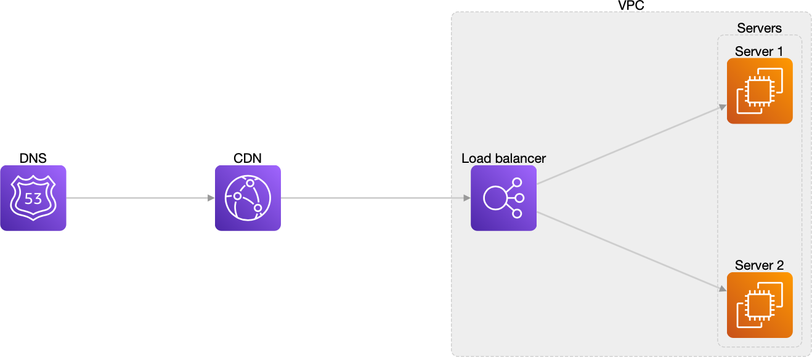

Basic

diagram "basic" [direction=lr] {
// creating the nodes
aws.route53 DNS;
aws.cloudfront cf [label="CDN"];
group vpc [label="VPC"] {
aws.elasticLoadBalancing load_balancer [label="Load balancer"];
group servers [label="Servers"] {
aws.ec2 server1 [label="Server 1"];
aws.ec2 server2 [label="Server 2"];
}
}
// creating the edges
DNS -> cf -> load_balancer [stroke=blue,style=dashed];
load_balancer => servers;
}
Serverless image processing
diagram "serverless image processing" [direction=lr] {
generic.user user [label="User"];
aws.appsync appsync [label="AWS AppSync"];
aws.s3 bucket [label="AWS S3 Bucket"];
aws.cognito cognito [label="AWS Cognito"];
aws.lambdaFunction workflow [label="Start workflow"];
aws.lambdaFunction resolver [label="Resolver"];
group backend [label="Backend",style=solid,opacity=0,stroke=red,width=4] {
aws.stepFunctions stepFunction [label="AWS Step Function"];
aws.lambdaFunction extraction [label="Extract metadata"];
aws.lambdaFunction detection [label="Object/Scene detection"];
aws.lambdaFunction thumbnailing [label="Create thumbnail"];
aws.lambdaFunction persistence [label="Persist metadata"];
aws.dynamodb dynamo [label="AWS DynamoDB"];
aws.rekognition rekognition [label="AWS Rekognition"];
stepFunction -> extraction;
stepFunction -> detection;
stepFunction -> thumbnailing;
stepFunction -> persistence;
persistence -> dynamo;
detection -> rekognition;
}
user -> cognito;
user -> appsync;
user -> bucket;
bucket -> workflow;
workflow -> appsync;
appsync -> resolver;
resolver -> stepFunction;
resolver -> dynamo;
}